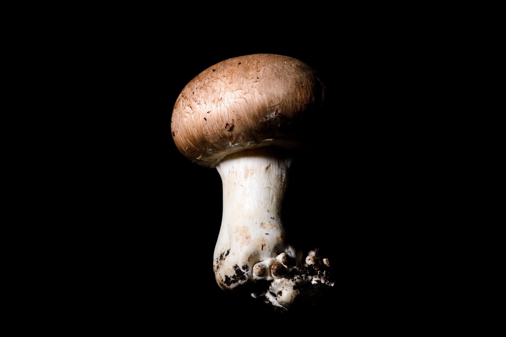
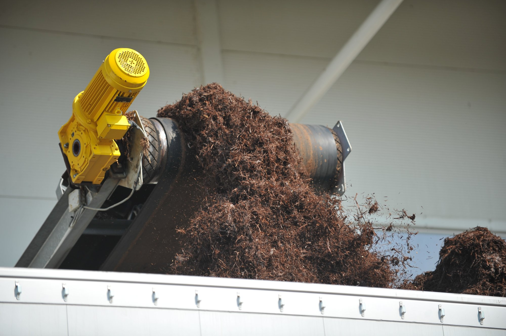

Családi vállalkozások összefogásával, tradíciók és elhivatottság megőrzésével, a legmodernebb technológiák bevonásával vált a Korona Gombaipari Egyesülés mára Közép-Európa egyik vezető gombaipari csoportosulásává.

A Korona Gombaipari Egyesülést családi vállalkozások hozták létre azért, hogy a hagyományokra építve, de a legmodernebb technológiákat alkalmazva közösen fejlődjenek. Ennek köszönhetően mára Közép-Európa egyik meghatározó gombaipari szereplőjévé váltunk.
A teljes gombatermesztési folyamatot lefedjük: a szaporítóanyag előállításától és a komposztgyártástól kezdve egészen a magas színvonalú termesztésen át a feldolgozásig. Így garantáljuk a folyamatos, megbízható minőséget.
Több száz kollégánkkal és elsősorban hazai partnereinkkel nap mint nap azon dolgozunk, hogy termékeink frissen, kiváló minőségben jussanak el a magyar és nemzetközi piacokra.
Folyamatosan fejlődünk: növeljük hatékonyságunkat, új technológiákat vezetünk be, és kiemelt figyelmet fordítunk a kutatás-fejlesztésre. Célunk, hogy partnereinket mindig a lehető legmagasabb színvonalon, megbízhatóan szolgáljuk ki.
Elhivatottak vagyunk abban, hogy minden egyes nap friss, biztonságos és kiváló minőségű élelmiszer kerüljön vásárlóink asztalára – mert hisszük, hogy a minőség nem kompromisszum kérdése, hanem felelősség. Szenvedélyünk a gomba, és ezt a szenvedélyt visszük bele minden egyes nap a munkánkba.

A tradíciók és elhivatottság megőrzése mellett, a legmodernebb technológiák bevonásával váltunk Közép-Európa egyik vezető gombaipari csoportosulásává. — Korona Gombaipari Egyesülés
Az alapítástól a mai napig – minden egyes lépés egy-egy hosszú távú befektetés volt a minőségbe és a technológiába.
A II. fázisú csiperke komposzt előállító üzem felépítése, az első felszíni gombatermesztő házak és a konzervüzem megnyitása Demjénben. A család vállalkozások egyesüléséből megszületik a Korona.
Korszerű, steril gombacsíra üzem és laboratórium átadása – Magyarországon elsőként állított elő gombacsírát üzemi méretekben. Mikrobiológiai, mikológiai és kísérleti fermentációs háttérrel.
További 60 db automatizált, holland-típusú gombatermesztő ház átadása. Ezzel kialakul Magyarország legnagyobb, ~45.000 m²-es termesztőfelülete – teljes körű automatizációval.
Megépül a komposztüzem zárt technológiáját biztosító csarnok és keverősor, valamint az elérhető legjobb technológiák közé tartozó, szaghatást jelentősen csökkentő, számítógép vezérelt ammóniamosó–biofilter együttes.
Termékeink nemcsak a magyar piacon, hanem számos európai országban is megtalálhatóak. IFS, HACCP, BRC, ISO 22000 minősítések, folyamatos technológiai fejlesztés és K+F.
Főként hazai beszállítókkal és több száz kollégával dolgozunk azon, hogy termékeinket a hazai és a számos külföldi piacra minden nap frissen és a legjobb minőségben juttassuk el.
Vállalkozásunk fő célja a folyamatos termelékenység-növelés mellett a kutatás-fejlesztés és a szakmához kapcsolódó innovatív technológiák bevezetése – a magas színvonalú vevőkiszolgálás biztosítása mellett.
Az alapanyaggyártástól kezdve a gombatermesztésen át a tartósított termékeinkig minden alapanyagot és gyártási folyamatot gondosan ellenőrzünk, a legjobb tanúsító intézetek felügyeletével.
Étkezési, termeszthető és mikorrhizás gombák termesztésbe vonásával foglalkozó, egyedülálló laboratóriumi háttér.
Egyedülállóan széles kínálat, saját márkás termékek, egyedi megrendelések lehetősége.
Termékeink számos európai országba eljutnak – megbízható, többéves partnerkapcsolatokon keresztül.
Több évtizedes szakmai tapasztalat, folyamatos képzés, a magyar gombatermesztés 70 éves öröksége.
Stabil, kiváló minőség egész éven át, pontos szállítás, hosszú távú, bizalmon alapuló partnerkapcsolatok.
A legmodernebb technológiák bevonása, folyamatos K+F, a naprakész technológia és a magas minőség találkozása.
Érdeklődik a Korona Gomba csoport, vagy konkrét beszállítói együttműködést keres? Írjon nekünk – kollégánk 24 órán belül felveszi Önnel a kapcsolatot.